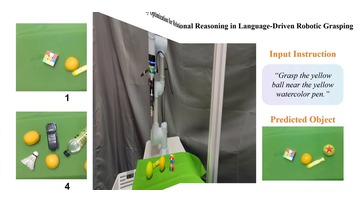
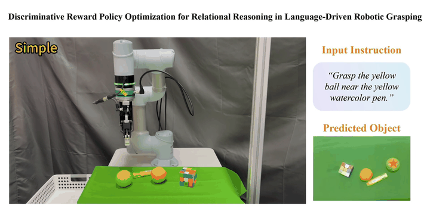
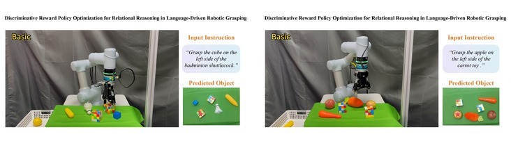
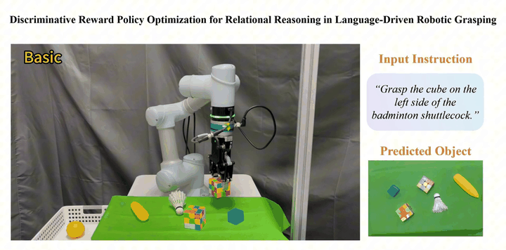
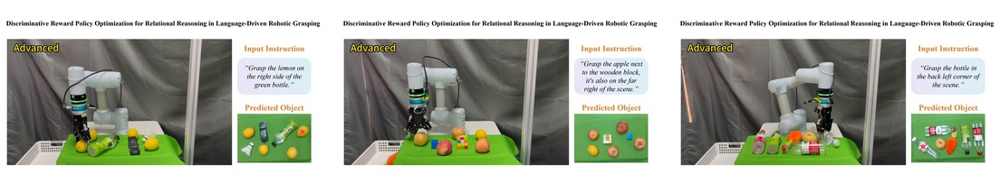
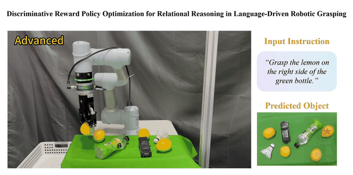

Motivation and Method
Why DRPO is needed and how the framework works
This clip introduces the failure mode of label-fitting in ambiguous scenes, then summarizes the reward-guided policy optimization pipeline.
Language-driven robotic grasping aims to turn free-form language instructions and visual perception into executable 6-DoF actions. Recent works have integrated Large Language Models (LLMs) or Vision-Language Models (VLMs) into grasping frameworks, achieving promising results in standard tabletop scenarios. However, their accuracy drops dramatically in cluttered environments with strong intra-class interference. This limitation can stem from an objective mismatch: supervision based on a single annotation neither enforces within-scene ranking among near-duplicate instances nor incorporates non-differentiable executability feedback.
We reformulate candidate selection as a top-k decision process and introduce Discriminative Reward Policy Optimization (DRPO), a reinforcement learning paradigm that optimizes rule-verified rewards capturing spatial localization, semantic alignment, intra-class disambiguation, and grasp executability. The supplementary results below are reorganized into short clips that highlight the motivation, method, and increasingly challenging grasping scenarios.
This narrated segment introduces the motivation behind DRPO and summarizes the reward-guided policy optimization pipeline.
Motivation and Method
This clip introduces the failure mode of label-fitting in ambiguous scenes, then summarizes the reward-guided policy optimization pipeline.
Simple


Basic


Advanced

